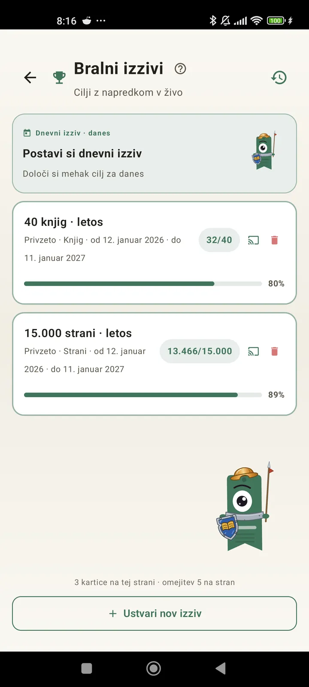

Spoznaj se kot bralec
Izzivi, bingi, pripomočki in še več funkcij, s katerimi iz branja potegneš največ. Novo v 3.7: izzivi in pripomočki za bingo.

Bralni izzivi
Postavi cilje po straneh, nizih ali žanrih. Do 15 aktivnih izzivov brezplačno, neomejeno s Pro. Poleg tega prilagodljiv dnevni izziv, ki se ne všteva v omejitev.

Dnevni izziv
Nov cilj vsak dan. Izziv opravi do polnoči, da ohraniš niz.

Bralni bingo
Dva nova binga vsak mesec s tematskimi polji. Dopolni vrstice, stolpce ali celotno kartico.

Tedenski povzetek
Vsak ponedeljek pregled tvojega tedna: prebrane strani, skupni čas, niz in primerjava s prejšnjim tednom.

Mesečni pregled
Ko se mesec konča, ga Lecturameter povzame: strani, čas, dokončane knjige, tvoj tempo iz dneva v dan in knjiga meseca.

Pripomoček za bingo Pro
Bingo kartica tega meseca, vedno na očeh, z izpolnjenimi polji in zbranimi vrstami.

Pripomoček za knjigo Brezplačno
Knjigo, ki jo bereš, vidiš kar na domačem zaslonu: naslovnica, naslov, avtor, strani in odstotek napredka, vedno posodobljeno. Velikost lahko prilagodiš, kamor želiš.
Resno, brat, aplikacija je kot terapija. Od nekaj strani na dan sem prišel na kakšnih 20 strani na dan in še napredujemMnenje uporabnika, poslano po e-pošti

Mesečna primerjava Pro
Hiter pogled na zadnje mesece, ne da bi odprl(a) aplikacijo. Stolpci s stranmi za vsak mesec, trenutni je poudarjen, tako da na prvi pogled vidiš, ali ti ta mesec gre bolje ali slabše kot prejšnji.

Pripomoček za izzive Pro
Tvoji aktivni izzivi in njihov napredek na domačem zaslonu. Na zaslonu Izzivi izberi, katere naj se prikažejo.